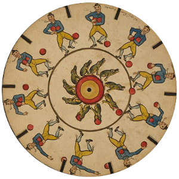

2021-12-15 22:55
Animating radial movements
In the first article of this series we discussed about the phenakistiscope, a rotating disk that produces short animations. In that post we saw a running horse and how it was made to move forward by having less frames than disk stops. Movement was tangential. In this article, we will talk about radial movements.
Animating radial movements
To make a feature move in a straight line, start by placing the first frame in the disk. For example, close to the border. Turn the disk by the angle of the animation (30° for 12 frames, for example) and draw the next frame along the line you want to trace. Continue until you have all the frames you want. At the end of this exercise, you will have a spiral!
This disk from 1833 shows a man feeding a frog with some red balls. The balls are drawn along a spiral, but in the animation, you will see them falling along a radial straight line.

So far, we have discussed two movements: Tangential and radial. In the next article we will talk about objects that move “up and down”, radially.
About this series
This is the second article about the phenakistiscope. In this short series, I describe some of the ideas used to animate the disks. The first article is here.
The image used above can be found in the library of congress of the United States and it is in the public domain.